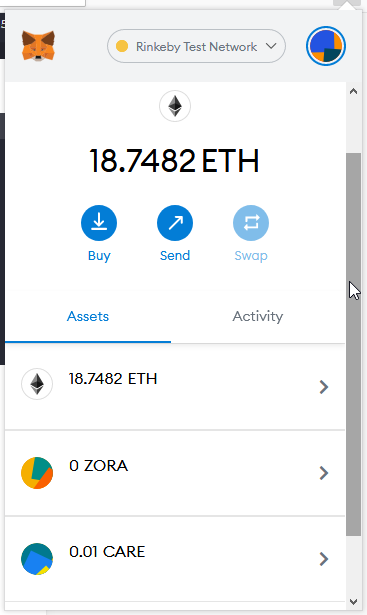
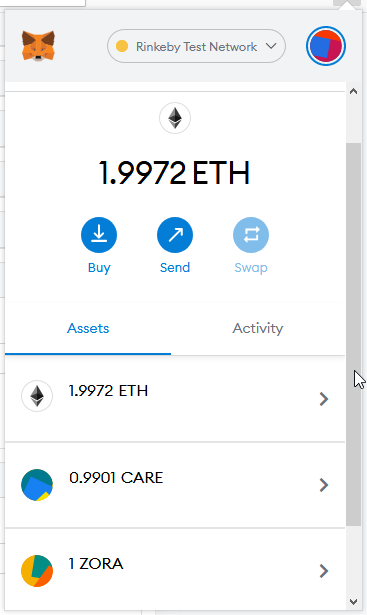

Zora 项目分析备忘
开发语言： Typescript
项目主要分为三个部分：
- Core: 正如其名，核心部分，包括了
Zora的智能合约 - ZDK cli： 开发者工具包和命令行工具。 第三方项目用这个就能和现成的
Zora智能合约集成了 - Zora V1 Subgraph: 这个是需要跑后端服务的，基于 The Grapth 的索引服务，构建 GraphQL API 查询以太坊和 IPFS 链上的信息
https://zora.co/ 这样面向终端用户的站点服务本身看来是属于还没有开源的部分，不过可以看出来是靠上面三大部分支撑的
还有一些外围
- Media Metadata Schemas 协议本身不检查 metadata, 可以自行定义新的 Metadata Schema 来满足自己项目的需要
Core
领域建模
看起来是按照
Cryptomedia = [Hypermedia + Creator + Owner + Market] = Value^1
的理念设计的
Creator Owner 基本就是直接靠 ERC721 标准解决的，在此基础上增加了对 tokenContent 和 tokenMetadata 的 Hash 和 URI 形成 Media，再将一个 Market 关联上来，我们看到的 Zora NFT 就对应其 Media 智能合约
- Media
- Market
- Bid
- Ask
- BidShares
- tokenOwner (ERC721 定义)
- tokenCreator
- previousTokenOwner
- tokenContentHash
- tokenURI (ERC721 定义)
- tokenMetadataHash
- tokenMetadataURI
- Market
标记了 ERC721 定义 以外的就是 Zora 追加的。大写字母开始的都是一种结构体，靠typechain生成的对应的ts文件
主要开发/构建命令
The following assumes node >= 12
Install Dependencies
1 | yarn |
Compile Contracts
1 | yarn build |
Start a Local Blockchain
1 | yarn chain |
Run Tests
1 | yarn test |
ZDK
理所当然地，依赖上面的 Core。在这个库里以 Typescript 的形式定义了对应智能合约领域模型的类，包括Zora BidShares Ask Bid MediaData EIP712Signature EIP712Domain, 还有配套的 Metadata Decimal Address 相关的生成、解析、校验\转换工具
- 测试框架 Jest
CLI
用这个是可以比较容易地体验铸币的感觉的
rinkeby
1 | zora mint uri --rpc-url <infura or alchemy node> \ |
刚好 Matataki 主站也在 Rinkeby 测试链上， content-uri 已经具备，做好一个metadata 上传 IPFS 就可以得到 metadata-uri
当然不做任何改造用这个调到的智能合约就是官方的了, 实验还是没问题的
Zora V1 Subgraph
简单来说就是搜索服务
制作实验
在 Rinkeby 上
Creator 地址 0xbc820824caef8ac41afbaf8f286dd7796e478827
Successfully submitted Mint Transaction to the Zora Media Contract.
Contract Address: 0x7C2668BD0D3c050703CEcC956C11Bd520c26f7d4.
ChainId 4.
Transaction Hash: 0x8da9696ae7487d5570f7830ada224ed42a067b910769de4c5699a1c5cab23d06.
用 balanceOf 可以确认到指定地址拥有的 ZORA 的 总数
用 tokenOfOwnerByIndex 可以确认到指定地址拥有的 各个 ZORA 的 TokenID
二者结合是可以遍历出个人持有的各个 ZORA Token的 TokenID，进一步拿到 tokenURI 和 metadataURI
写方面可以用 setAsk 报价
1 | {amount:1000000,currency:"0x280Be10b609F95f70E82c0D7151543f59102f47D"} |
指定 岛岛币在 Rinkeby 上的地址来报个卖家价格
成功执行事务了
https://rinkeby.etherscan.io/tx/0x7d1afd67e88004eb728efdbecb4de080c7a4f6c634ef8bf623de37a24ea42ed0
Overview->Input Data:
| # | Name | Type | Data |
| - | —- | —- | —- |
| 0 | data.tokenURI | string | https://arweave.net/cgcaeQKCzbbY5bOAdZgkUiS2_HVrLGUTLtw7z4YmXzA |
| 0 | data.metadataURI | string |https://arweave.net/w7y5m68ApWWBT2b-v1orK1HC550_1ILFP5Z6g-IYLsk |
| 0 | data.contentHash | bytes32 | 0x43811d3168b5109c9b6497b574e670a24191db9463065fe8a1cd79f7550d3259 |
| 0 | data.metadataHash | bytes32 | 0x6546bae0a94664535b214df342ab8008d9549e2e0c1d1f886dbd1f6d180e7467 |
可以确认到我们的两个链接
Media 和 Market 两个协议是有互指的.
从具体的 Hash 找到 一个还是比较容易的，这个在客户端保存亦可。或者存到社交消息上亦可。
Market 的 Ask 和 Bid 只能 从 Media 去调用，会检查。
从 currentAskForToken 输入之前做的NFT的 tokenID 可以看到之前 setAsk的报价信息
bidShares 结构
1 | {creator: {value:15},owner: {value:80},prevOwner: {value:5}} |
setBid
1 | {amount:900000,currency:"0x280Be10b609F95f70E82c0D7151543f59102f47D", bidder:"0x9FD9685148f62833A0c868D65B83AC04C5B43081",recipient:"0x7c2668bd0d3c050703cecc956c11bd520c26f7d4",sellOnShare:{value:20}} |
先换成其他 Fan 票 测试
用 Care 测试
换了多个 recipient 测试, 也就是说 “可以买给别的地址”, 买单的是 bidder,这里就买给自己
1 | {amount:1,currency:"0x0c064faD09Ef700F9087B9ca47867ac24fdAD2f3", bidder:"0x9FD9685148f62833A0c868D65B83AC04C5B43081",recipient:"0x9FD9685148f62833A0c868D65B83AC04C5B43081",sellOnShare:{value:1}} |
这样依然会失败
从安全性角度来说，还要去 Fan票 合约那边 approve ，否则无法支付
简单来说 ERC20 transferFrom 的条件无法满足
1 | function transferFrom(address sender, address recipient, uint256 amount) public virtual override returns (bool) { |
在 Zora 的合约里就是这
1 | IERC20 token = IERC20(bid.currency); |
token.safeTransferFrom(spender, address(this), bid.amount); 这个要成功需要 先在 Fan 票的合约里 approve 给 spender （Market 合约地址）
都准备好之后重新从 setAsk 开始
1 | {amount:100,currency:"0x0c064faD09Ef700F9087B9ca47867ac24fdAD2f3"} |
setBid
1 | {amount:1,currency:"0x0c064faD09Ef700F9087B9ca47867ac24fdAD2f3", bidder:"0x9FD9685148f62833A0c868D65B83AC04C5B43081",recipient:"0x7c2668bd0d3c050703cecc956c11bd520c26f7d4",sellOnShare:{value:1}} |
事务可以完成确认了。Care会转给这个地址： 0x85e946e1Bd35EC91044Dc83A5DdAB2B6A262ffA6 也就是 Market
接着报价
1 | {amount:100,currency:"0x0c064faD09Ef700F9087B9ca47867ac24fdAD2f3", bidder:"0x9FD9685148f62833A0c868D65B83AC04C5B43081",recipient:"0x9FD9685148f62833A0c868D65B83AC04C5B43081",sellOnShare:{value:20}} |
这样交易就完成了，自动撮合逻辑对应合约里的这部分
1 | // If a bid meets the criteria for an ask, automatically accept the bid. |
currency 对得上， amount超过当前ask的，满足条件


依然可以继续 setBid
因为 approve 的没有那么多，所以出大的amount会失败
1 | {amount:20000,currency:"0x0c064faD09Ef700F9087B9ca47867ac24fdAD2f3", bidder:"0x9FD9685148f62833A0c868D65B83AC04C5B43081",recipient:"0x9FD9685148f62833A0c868D65B83AC04C5B43081",sellOnShare:{value:20}} |
一次1，一次100，之前 approve 了10000，所以现在最多报价到9899
1 | {amount:9899,currency:"0x0c064faD09Ef700F9087B9ca47867ac24fdAD2f3", bidder:"0x9FD9685148f62833A0c868D65B83AC04C5B43081",recipient:"0x7c2668bd0d3c050703cecc956c11bd520c26f7d4",sellOnShare:{value:10}} |
这个是可以成功的
不过之前设置的Share非常小，只有 20， 无论是做 setAsk 还是 acceptBid 都无法满足那个比例
Fail with error ‘Market: Ask invalid for share splitting’
因为目前 BidShares 是这种数字，之前设置的位数不对
preOwner: 20
creator: 10000000000000000000
owner: 89999999999999999980
另外交易过程中注意 Market 0x85e946e1Bd35EC91044Dc83A5DdAB2B6A262ffA6 的 allowance 变化，用完了需要重新去 approve 才能继续回来 setBid
先测试到这里，可以去各自合约里确认这笔交易，也能看到 NFT 的 owner 发生变化了